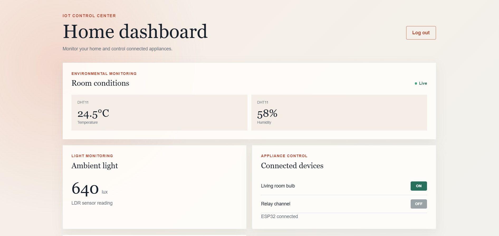
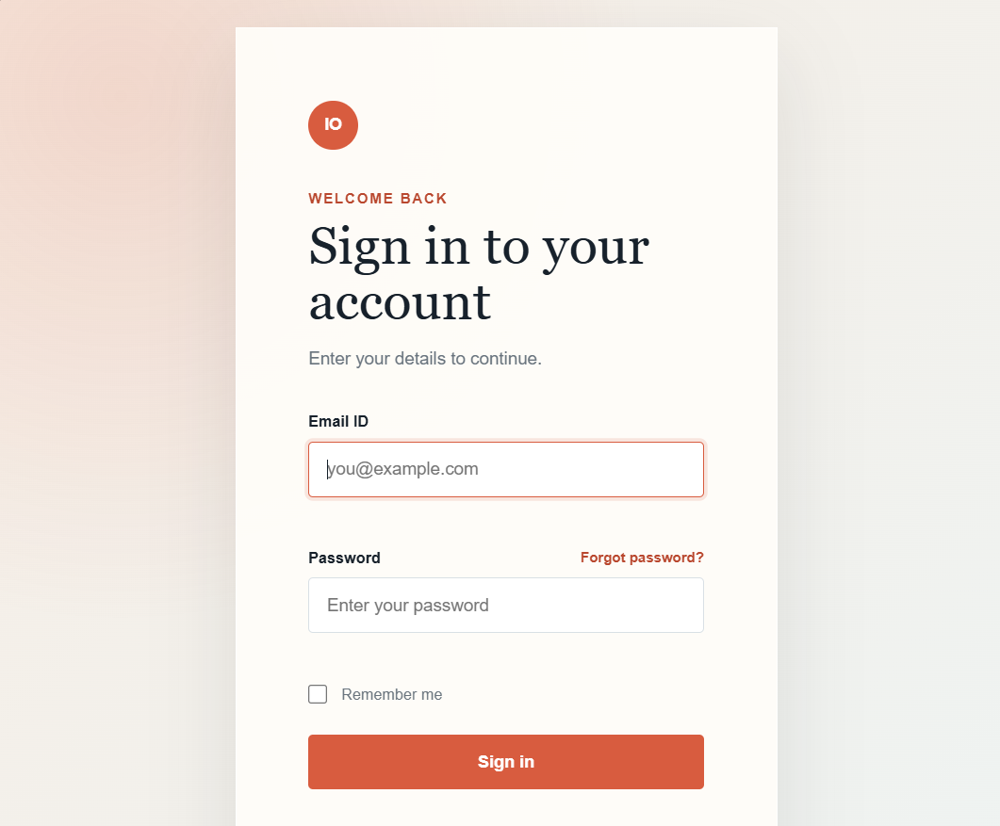
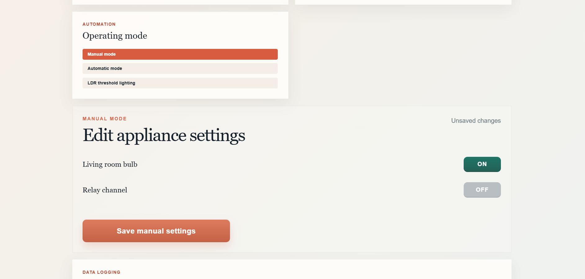

Temperature
24.8°
Celsius · DHT11
The dashboard brings environmental readings and appliance control into one simple view. Its layout is designed to make the system state easy to scan on a desktop or phone.
Relay state is shown separately from the sensor readings.
Dashboard preview with illustrative readings.
The ESP32 gathers temperature and humidity from a DHT11 sensor and ambient light from an LDR. It samples the sensors every two seconds and smooths the light readings to reduce small fluctuations. Readings travel over Wi-Fi to Firebase, where the web dashboard can display them.
Relay commands travel back through Firebase to the ESP32, which switches the connected appliance. The relay in this setup is active-LOW: a LOW GPIO signal activates it, and a HIGH signal deactivates it. The dashboard keeps sensor readings, connection status, and relay state in separate areas so each is easy to understand.
The interface groups temperature, humidity, and light into consistent metric cards, then gives relay control its own panel. Connection and update details remain visible so a user can distinguish sensor information from appliance state. Responsive spacing keeps the same hierarchy on smaller screens.
Three sensor values use clear labels, units, and a consistent visual scale.
The relay control is paired with an explicit ON state and device label.
ESP32 and Firebase status provide context for the data shown in the dashboard.





The goal of this task is to create a responsive three-page dashboard for Forge using HTML, CSS, and JavaScript. The dashboard allows users to view sensor readings and control a bulb from different screen sizes.
In earlier tasks, the ESP32 was controlled through a local web page, an Adafruit IO dashboard, and Google Assistant. None of these provided Forge with its own dedicated interface. This task creates a single, clean place for sign-in, live monitoring, bulb control, mode selection, and data download.
This interface is built before the hardware is connected. Firebase is set up through a placeholder configuration file, and the real values are added in Task 5.
This project is a three-page web app: a landing page, a login page, and a dashboard. The dashboard displays live temperature, humidity, and light values, includes an animated bulb toggle, provides manual and automatic modes, has a light-sensitivity slider, shows a history table, and supports CSV export.
Basic operation: User → Landing Page → Login Page → Dashboard → Firebase Realtime Database
The web page used to see the sensor data and control the bulb. Here it is a small three-page web app, built on its own before any hardware is connected.
A landing page announcing Forge, a login page, and the dashboard itself.
The three languages of every web page: HTML is the structure, CSS is the look, JavaScript is the behaviour. Forge uses only these, with no framework.
Keeping track of what the page currently knows, for example whether the bulb toggle is a manual command or the automatic mode's decision.
The control that switches between manual and automatic.
The slider that sets the threshold (0–4095) used in automatic mode.
The list of the latest recorded readings.
One click downloads the recorded temperature, humidity and light as a spreadsheet file.
Checking what a user types before it is used, so bad values never reach the database.
What the page shows while data is still arriving, and what it says when something goes wrong, instead of a blank screen.
Styles that adapt to the screen size. The dashboard was tested on phone, tablet and desktop.
A short smooth change between two states. Without it the toggle felt dead; with it the same response felt instant.
How fast something feels rather than how fast it is. Users do not care about the stack, they care that clicking ON turns the light on.
The complete system contains four major elements:
User → Web Dashboard (Browser) → Firebase (Auth + Realtime Database) → ESP32 → Bulb
In this task only the first two parts are built and checked. The Firebase and ESP32 connection is completed in Task 5.